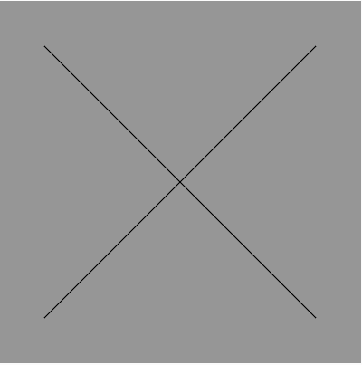

Primeiro Arquivo em javascript
Para colocar um link para um arquivo em javascript, basta ir no p5.js, no canto superior esquerdo no sinal de mais ir em criate file ou
criar arquivo nomeie com letra.html assim coloque estes codigo neste arquivo
<!DOCTYPE html>
<html lang="pt-br">
<head>
<script src="https://cdn.jsdelivr.net/npm/p5@1.11.11/lib/p5.js"></script>
<script src="https://cdn.jsdelivr.net/npm/p5@1.11.11/lib/addons/p5.sound.min.js"></script>
<link rel="stylesheet" type="text/css" href="style.css">
<meta charset="utf-8" />
</head>
<body>
<main>
</main>
<script src="sketch.js"> </script>
</body>
</html>
feito isso voltamos no arquivo index.html e colocamos o link da página que acabamos de criar
<a href="letra.html">letra em javascript </a>
agora vamos no arquivo sketch.js e vamos adicionar uma letra usando linhas
function setup() {
createCanvas(LARGURA EM PIXELS, ALTURA EM PIXELS);
}
function draw() {
background(VERMELHO, VERDE, AZUL);
line(X 1, Y 1,X 2, Y 2);
}
as variaveis LARGURA E ALTURA define o tamalho da janela que irá mostra seu arquivo em javascript
as variaveis VERMELHO, VERDE E AZUL podem ter valores de 0 a 255 até achar a cor que você quiser
as variaveis X1, Y1 são as cordenadas do ponto de inicio da reta e X2, Y2 as cordenada do ponto de termino da reta
function setup() {
createCanvas(400, 400);
}
function draw() {
background(150, 150, 150);
line(50, 50, 350, 350);
line(50, 350, 350, 50);
}
Resultado
